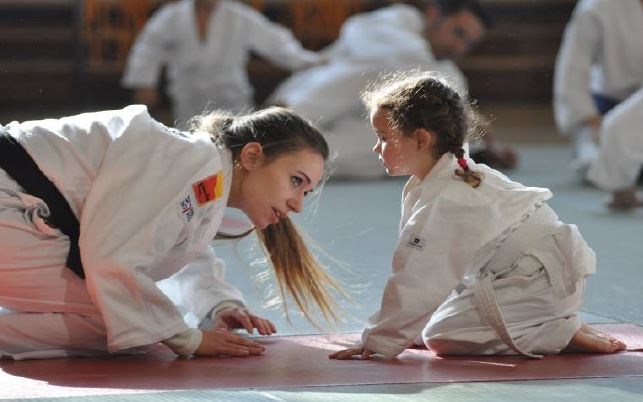

El judo fue creado en 1882 por el maestro japonés Jigorō Kanō, quien buscaba una forma de arte marcial que combinara eficacia técnica con valores educativos y filosóficos. Inspirado por antiguas escuelas de jiu-jitsu como Tenjin Shinyo-ryu y Kitō-ryū, Kanō seleccionó y refinó técnicas que pudieran practicarse de forma segura en combate deportivo. Fundó el Kodokan, la primera escuela de judo, y estableció principios como el seiryoku zen'yō (máxima eficiencia con mínima energía) y el jita kyōei (beneficio mutuo), que aún hoy definen la esencia del judo.
El judo no es solo una práctica física; es una filosofía que promueve el crecimiento integral del individuo. A través del entrenamiento, los judocas aprenden a controlar su cuerpo y mente, a respetar al adversario y a superar desafíos con humildad. En muchos países, el judo se utiliza como herramienta de inclusión social, rehabilitación y formación ética. Su legado va más allá del tatami: es una forma de entender la vida con equilibrio, respeto y perseverancia.
